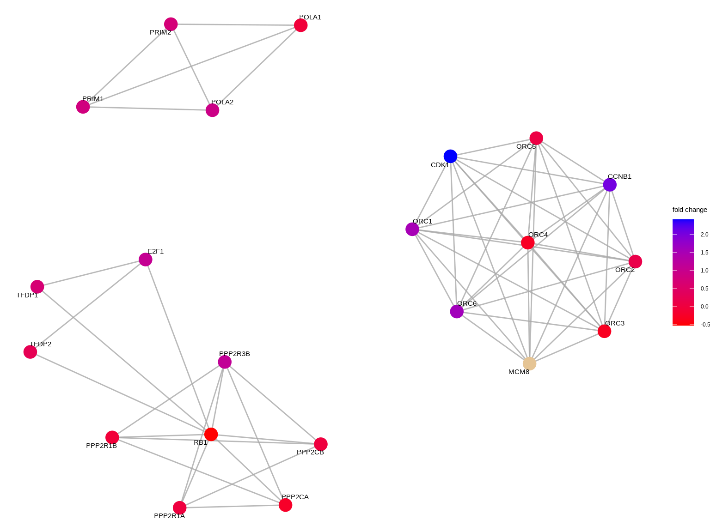
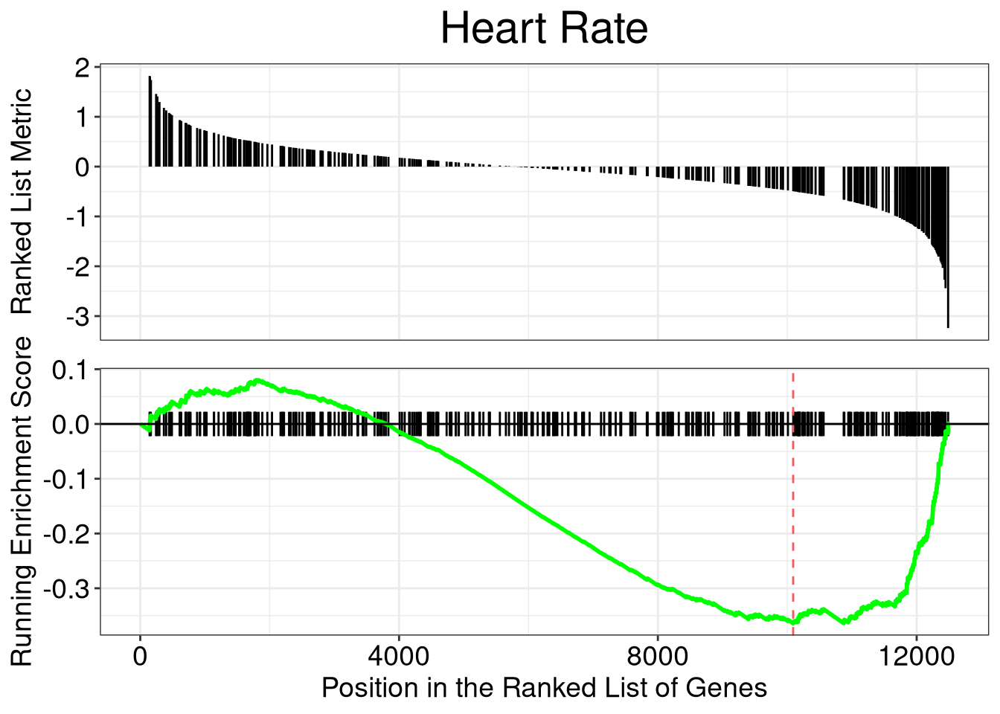

Chapter 10 MeSH enrichment analysis
meshes supports enrichment analysis (over-representation analysis and gene set
enrichment analysis) of gene list or whole expression profile using MeSH
annotation. Data source from gendoo, gene2pubmed and RBBH are all
supported. User can selecte interesting category to test. All 16
categories are supported. The analysis supports >70 species listed in MeSHDb BiocView.
For algorithm details, please refer to the vignettes of DOSE(Yu et al. 2015) package.
library(meshes)
data(geneList, package="DOSE")
de <- names(geneList)[1:100]
x <- enrichMeSH(de, MeSHDb = "MeSH.Hsa.eg.db", database='gendoo', category = 'C')
head(x)## ID Description GeneRatio BgRatio pvalue
## D043171 D043171 Chromosomal Instability 16/96 198/16528 2.794765e-14
## D000782 D000782 Aneuploidy 17/96 320/16528 3.866830e-12
## D042822 D042822 Genomic Instability 16/96 312/16528 3.007419e-11
## D012595 D012595 Scleroderma, Systemic 11/96 279/16528 6.449334e-07
## D009303 D009303 Nasopharyngeal Neoplasms 11/96 314/16528 2.049315e-06
## D019698 D019698 Hepatitis C, Chronic 11/96 317/16528 2.246856e-06
## p.adjust qvalue
## D043171 2.459394e-11 1.815127e-11
## D000782 1.701405e-09 1.255702e-09
## D042822 8.821761e-09 6.510798e-09
## D012595 1.418854e-04 1.047168e-04
## D009303 3.295389e-04 2.432123e-04
## D019698 3.295389e-04 2.432123e-04
## geneID
## D043171 4312/991/2305/1062/4605/10403/7153/55355/4751/4085/81620/332/7272/9212/1111/6790
## D000782 4312/55143/991/1062/7153/4751/79019/55839/890/983/4085/332/7272/9212/8208/1111/6790
## D042822 55143/991/1062/4605/7153/1381/9787/4751/10635/890/4085/81620/332/9212/1111/6790
## D012595 4312/6280/1062/4605/7153/3627/4283/6362/7850/3002/4321
## D009303 4312/7153/3627/6241/983/4085/5918/332/3002/4321/6790
## D019698 4312/3627/10563/6373/4283/983/6362/7850/332/3002/3620
## Count
## D043171 16
## D000782 17
## D042822 16
## D012595 11
## D009303 11
## D019698 11In the over-representation analysis, we use data source from gendoo and C (Diseases) category.
In the following example, we use data source from gene2pubmed and test category G (Phenomena and Processes) using GSEA.
y <- gseMeSH(geneList, MeSHDb = "MeSH.Hsa.eg.db", database = 'gene2pubmed', category = "G")
head(y)## ID Description setSize enrichmentScore NES
## D006339 D006339 Heart Rate 336 -0.3640991 -1.565267
## D049629 D049629 Waist-Hip Ratio 321 -0.3659337 -1.566436
## D001846 D001846 Bone Development 322 -0.3722690 -1.592860
## D055105 D055105 Waist Circumference 277 -0.4017143 -1.700715
## D020257 D020257 Ventricular Remodeling 291 -0.3899142 -1.655773
## D058685 D058685 Genetic Pleiotropy 240 -0.3978016 -1.655257
## pvalue p.adjust qvalues rank leading_edge
## D006339 0.001300390 0.03404692 0.02518795 2405 tags=29%, list=19%, signal=24%
## D049629 0.001317523 0.03404692 0.02518795 2176 tags=27%, list=17%, signal=23%
## D001846 0.001319261 0.03404692 0.02518795 2100 tags=27%, list=17%, signal=23%
## D055105 0.001328021 0.03404692 0.02518795 1625 tags=24%, list=13%, signal=21%
## D020257 0.001329787 0.03404692 0.02518795 2622 tags=34%, list=21%, signal=28%
## D058685 0.001351351 0.03404692 0.02518795 3048 tags=38%, list=24%, signal=29%
## core_enrichment
## D006339 83478/4985/7139/8929/3784/10681/3375/154/1760/9781/5139/118/2702/6532/6416/2869/270/7157/627/2908/7138/5563/3643/1129/7779/947/1901/2034/4179/4804/64388/1621/4881/8863/5021/844/4212/11030/5797/6403/4803/84059/79789/5176/3953/5243/5468/1012/2868/5793/4023/7056/3952/5577/126/2946/3778/477/5733/4313/2944/9201/3075/9499/2273/2099/1471/857/775/5138/4306/4487/213/5350/5744/23245/2152/2697/2791/185/6863/2952/5327/80206/2200/9607/3572/150/8490/3479/2006/55259/9370/125/652/55351
## D049629 6532/8609/9563/23405/10206/7157/23314/4776/25970/627/2908/490/4057/268/3567/23429/283450/1543/3240/3174/81490/23047/55304/5099/54808/4179/2169/948/8082/4018/54465/4256/3087/5919/253461/26470/10903/1581/56172/3953/5950/5468/1012/8835/4023/594/4214/7350/3952/79068/51232/2202/6444/9369/2099/6833/3991/4016/2690/57161/79750/4915/5125/5167/8639/11188/10631/3551/2487/2697/6935/3487/367/4982/3667/4059/150/9358/1489/3479/6424/9370/4629/652/5346/7021/4239/5241
## D001846 1499/8945/7157/57798/79048/627/6500/8038/4057/860/2752/4882/3371/2915/5745/63971/54455/3791/819/57045/596/2034/54808/80781/1280/64388/2261/4054/11059/3483/9900/26234/4734/9452/4208/4322/253461/1278/7048/51280/10903/30008/7869/1277/3953/10516/10411/8835/79776/11167/2317/3485/3952/5274/54681/4488/10486/1009/2202/91851/2099/5764/23327/3339/8817/83716/6678/4915/633/658/54361/5744/165/5654/10631/3487/367/4982/3667/79971/1634/3479/114899/9370/652/8614/4969
## D055105 3643/7466/181/2078/2169/948/4887/3931/4018/4212/9208/6403/3087/84059/5919/253461/2308/79789/5176/3953/5950/2166/6414/5243/5468/1012/4023/582/4214/3485/7350/3952/5577/126/585/79068/2202/4313/9369/2621/2099/1471/2690/1363/4306/174/5167/23245/10631/4886/185/9863/4982/80206/3667/9607/563/1489/3479/9370/23704/2167/5346/7021/79689/9
## D020257 5310/7082/4317/7057/5532/57104/3915/387032/3624/7139/6385/154/5530/1238/5595/5228/1499/7157/4776/25970/408/8654/4811/94/3910/3371/6548/3082/5914/1291/7173/947/3685/80757/80781/5592/1490/1306/4314/80070/10272/4881/3875/595/7042/3912/1511/2934/4060/283/1277/7078/5549/22795/1293/2247/50507/1281/5136/11167/4319/3952/1513/6310/4313/2199/1294/2273/2099/6387/3339/7079/1462/1292/775/3908/4306/4035/633/5167/5350/11188/10418/10631/9429/1805/2487/2697/185/7043/6863/3913/4982/1634/7060/3479/7373/9370/2167/652
## D058685 60626/2913/472/22818/56155/7297/605/6311/55802/26052/23495/4237/53353/23067/783/4025/8434/30845/26053/83478/5071/124565/3784/368/777/144404/5087/1499/3232/7157/60468/221037/8654/4088/55576/9811/7010/4602/1027/51111/2619/3490/2823/2034/5592/11197/5737/196/26999/84159/23041/80059/3912/6584/50650/23410/10580/79987/1012/1272/8076/9778/2530/9457/4214/146691/477/5733/6444/6720/6925/2099/2674/775/64800/10129/9223/79750/2737/1264/1811/57551/3572/10451/55714/23090/652/4137/11122/10551User can use visualization methods implemented in enrichplot (i.e.barplot, dotplot, cnetplot, emapplot and gseaplot) to visualize these enrichment results. With these visualization methods, it’s much easier to interpret enriched results.
dotplot(x)
gseaplot(y, y[1,1], title=y[1,2])
References
Yu, Guangchuang, Li-Gen Wang, Guang-Rong Yan, and Qing-Yu He. 2015. “DOSE: An R/Bioconductor Package for Disease Ontology Semantic and Enrichment Analysis.” Bioinformatics 31 (4): 608–9. https://doi.org/10.1093/bioinformatics/btu684.